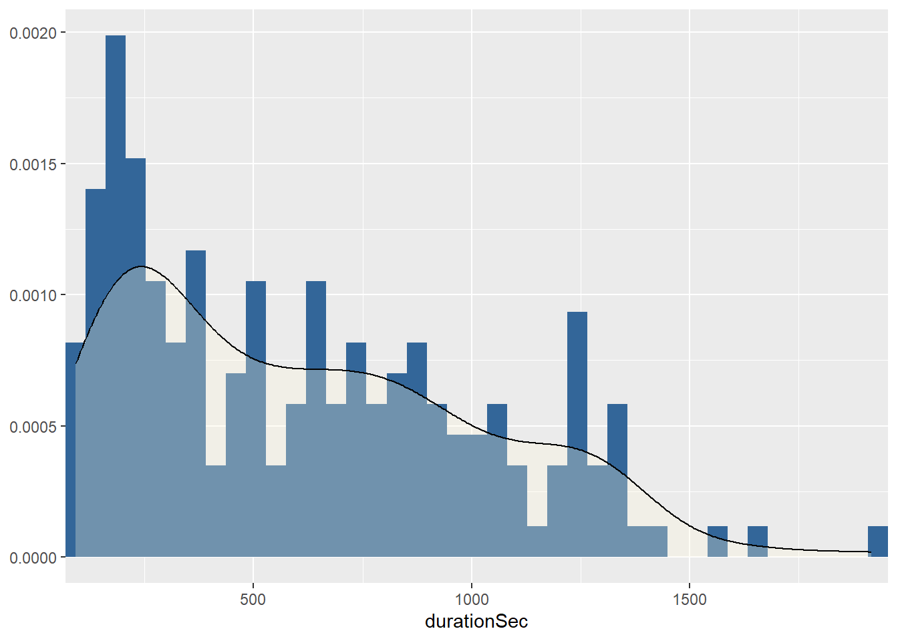
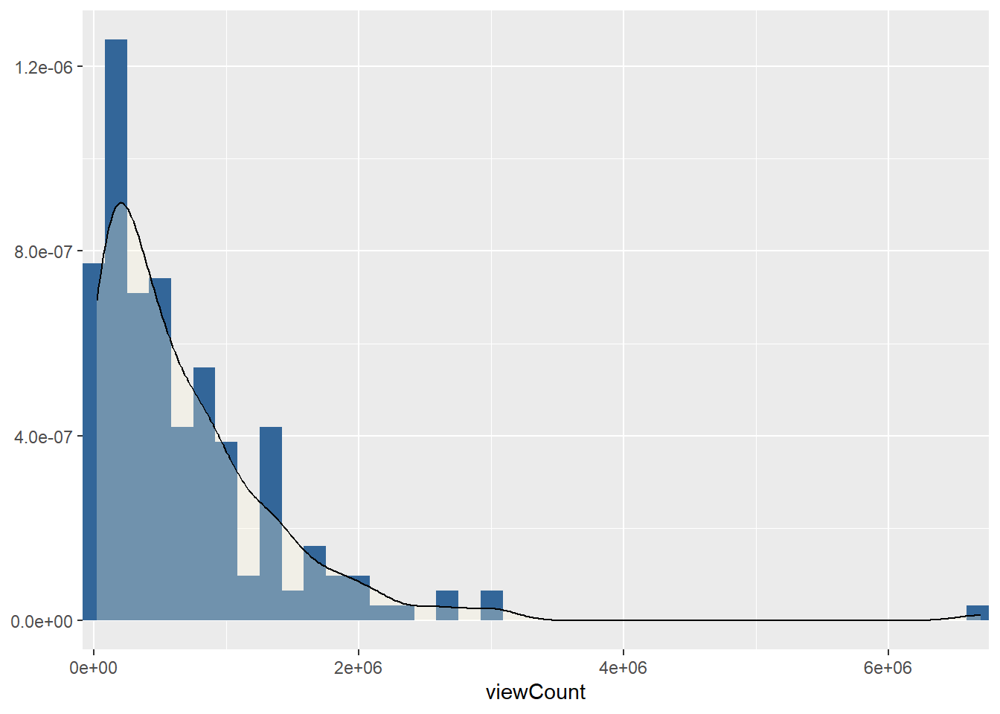
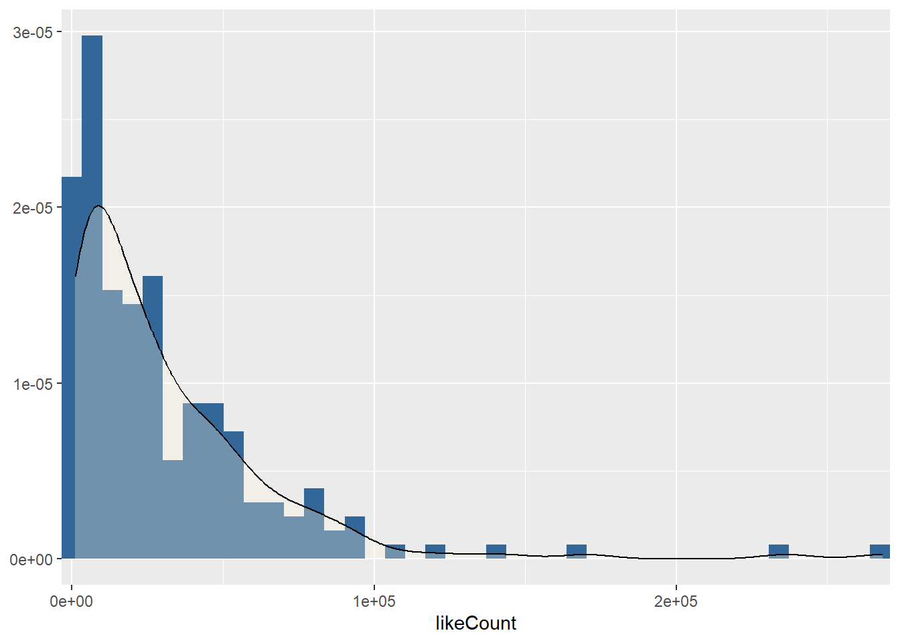

Showcase
Focus on YouTube Data Tools
Background
Practical application of the YouTube Data Tool (YTDT) using the example of Mai Thi Nguyen-Kim ( | ) and her -Channel maiLab.
You can also open this showcase in other interactive and executable environments: 

Exercise 1
- Use the
Channel Searchsite/function of theYTDTto find the (correct)channel IDfor the Channel maiLab.
Channel maiLab. - Therefore, enter “maiLab” in the field
Search queryand download the results as.csv. - Open the file and search extract the correct channel ID.
Hint: If in doubt, useChannel Infofunction to check if the selected ID matches the channel description.
# Load packages
library(readr)
library(tidyverse)
# Import data
channel_list <- read_csv(
here("content/05-api_access-youtube/data/channelsearch_channels50_2022_11_17-09_54_22.csv"))
# Preview data
channel_list %>% glimpse()Rows: 50
Columns: 10
$ position <dbl> 1, 2, 3, 4, 5, 6, 7, 8, 9, 10, 11, 12, 13, 14, 15, 16,…
$ id <chr> "UCyHDQ5C6z1NDmJ4g6SerW8g", "UC146qqkUMTrn4nfSSOTNwiA"…
$ title <chr> "maiLab", "musstewissen Chemie", "mailab", "MAILab_메…
$ description <chr> "Holt euch einen Tee, Freunde der Sonne, macht es euch…
$ publishedAt <dttm> 2016-09-08 14:13:08, 2016-09-23 09:24:14, 2020-03-19 …
$ defaultLanguage <chr> NA, NA, NA, NA, NA, NA, NA, NA, NA, NA, NA, NA, NA, NA…
$ country <chr> "DE", "DE", "DE", "KR", NA, NA, NA, NA, NA, "DE", NA, …
$ viewCount <dbl> 127882489, 18039348, 21013, 5101, 11, 2, 2, 5004, 230,…
$ subscriberCount <dbl> 1480000, 190000, 146, 26, 0, 1, 1, 9, 9, 66300, 0, 2, …
$ videoCount <dbl> 186, 45, 9, 104, 3, 1, 1, 24, 12, 51, 1, 6, 31, 1, 2, …# Get channel description with R
channel_list %>%
filter(title == "maiLab") %>%
select(id, title, description)# A tibble: 1 × 3
id title description
<chr> <chr> <chr>
1 UCyHDQ5C6z1NDmJ4g6SerW8g maiLab Holt euch einen Tee, Freunde der Sonne, macht…Exercise 2
- With help of the
Video Listsite/function of theYTDT, get a list of all published videos of the channelmaiLab. - Therefore, use the extracted
channel idand download the results as.csv. - Import/preview the data.
# Import data: video list
video_list <- read_csv(
here("content/05-api_access-youtube/data/videolist_channel186_2022_11_17-10_20_11.csv"))
# Preview data
video_list %>% glimpse()Rows: 186
Columns: 23
$ position <dbl> 1, 2, 3, 4, 5, 6, 7, 8, 9, 10, 11, 12, 13, 14, 15, …
$ channelId <chr> "UCyHDQ5C6z1NDmJ4g6SerW8g", "UCyHDQ5C6z1NDmJ4g6SerW…
$ channelTitle <chr> "maiLab", "maiLab", "maiLab", "maiLab", "maiLab", "…
$ videoId <chr> "IK5BZdnqMDU", "Mt50U4_ueR0", "-NMs56pQ9EE", "-9OvN…
$ publishedAt <dttm> 2022-09-18 16:00:18, 2022-06-09 04:30:04, 2022-05-…
$ publishedAtSQL <dttm> 2022-09-18 16:00:18, 2022-06-09 04:30:04, 2022-05-…
$ videoTitle <chr> "Das Ende der Homöopathie | MAITHINK X", "Affenpock…
$ videoDescription <chr> "Der vielleicht größte Abwasserskandal aller Zeiten…
$ tags <chr> "Mai Thi Nguyen-Kim,Mai Thi,mai,nguyen,mailab,lab,m…
$ videoCategoryId <dbl> 28, 28, 28, 28, 22, 28, 22, 22, 22, 27, 22, 22, 28,…
$ videoCategoryLabel <chr> "Science & Technology", "Science & Technology", "Sc…
$ duration <chr> "PT31M57S", "PT13M39S", "PT15M21S", "PT12M6S", "PT1…
$ durationSec <dbl> 1917, 819, 921, 726, 832, 1664, 306, 1065, 1325, 12…
$ dimension <dbl> 2, 2, 2, 2, 2, 2, 2, 2, 2, 2, 2, 2, 2, 2, 2, 2, 2, …
$ definition <chr> "hd", "hd", "hd", "hd", "hd", "hd", "hd", "hd", "hd…
$ caption <lgl> FALSE, TRUE, TRUE, FALSE, TRUE, TRUE, TRUE, TRUE, T…
$ thumbnail_maxres <chr> "https://i.ytimg.com/vi/IK5BZdnqMDU/maxresdefault.j…
$ licensedContent <dbl> 1, 1, 1, 1, 1, 1, 1, 1, 1, 1, 1, 1, 1, 1, 1, 1, 1, …
$ viewCount <dbl> 1729562, 993841, 929302, 2125579, 3021542, 895038, …
$ likeCount <dbl> 83334, 56794, 64304, 123191, 236388, 77980, 73251, …
$ dislikeCount <lgl> NA, NA, NA, NA, NA, NA, NA, NA, NA, NA, NA, NA, NA,…
$ favoriteCount <dbl> 0, 0, 0, 0, 0, 0, 0, 0, 0, 0, 0, 0, 0, 0, 0, 0, 0, …
$ commentCount <dbl> 18716, 9141, 8204, 38823, 111200, 7905, 3831, 5723,…Exercise 3
- Perform different explorative data analysis
Different location parameters
# Load additional packages
library(sjmisc)
# Get distribution parameters for selected variables
video_list %>%
select(durationSec, viewCount, likeCount, favoriteCount, commentCount) %>%
descr()
## Basic descriptive statistics
var type label n NA.prc mean sd se
durationSec numeric durationSec 186 0 612.92 402.74 29.53
viewCount numeric viewCount 186 0 687563.73 763588.15 55989.00
likeCount numeric likeCount 186 0 31172.50 36815.40 2699.44
favoriteCount numeric favoriteCount 186 0 0.00 0.00 0.00
commentCount numeric commentCount 186 0 5598.28 11238.77 824.07
md trimmed range iqr skew
530.5 579.42 1825 (92-1917) 633.25 0.64
467371.5 562670.19 6671382 (21298-6692680) 782761.75 3.36
20970.5 24734.81 267376 (1063-268439) 37023.75 3.10
0.0 0.00 0 (0-0) 0.00 NaN
2068.0 3106.24 111166 (34-111200) 5718.00 5.54More detailed distribution for each variable
video_list %>%
plot_frq(durationSec, viewCount, likeCount, commentCount, type = "density")[[1]]
[[2]]
[[3]]
[[4]]
In-depth analysis
Based on the findings of the previous section, let us take a closer look. Interestingly, although most of the varialbes have a left-sloping distribution, there are isolated outliers on the “right” edge.
Therefore, the next goal is to find out which video(s) they are.
Top 5 videos with the highest view count
video_list %>%
arrange(-viewCount) %>%
select(videoTitle, publishedAt, viewCount, likeCount, commentCount) %>%
head()# A tibble: 6 × 5
videoTitle publishedAt viewCount likeCount comme…¹
<chr> <dttm> <dbl> <dbl> <dbl>
1 Corona geht gerade erst los 2020-04-02 07:00:00 6692680 268439 48174
2 Impfpflicht ist OK 2021-11-14 07:00:11 3021542 236388 111200
3 So endet Corona 2021-01-28 06:15:04 3020999 170219 28363
4 Virologen-Vergleich 2020-04-19 07:00:22 2654200 92957 33773
5 Rezo wissenschaftlich geprüft 2019-05-24 04:30:25 2605822 142990 16995
6 Was ist jetzt mit dem Kokosöl? 2018-08-30 04:30:01 2362469 63198 6833
# … with abbreviated variable name ¹commentCountTop 5 videos with the highest comment count
video_list %>%
arrange(-commentCount) %>%
select(videoTitle, publishedAt, viewCount, likeCount, commentCount) %>%
head()# A tibble: 6 × 5
videoTitle publishedAt viewC…¹ likeC…² comme…³
<chr> <dttm> <dbl> <dbl> <dbl>
1 Impfpflicht ist OK 2021-11-14 07:00:11 3021542 236388 111200
2 Corona geht gerade erst los 2020-04-02 07:00:00 6692680 268439 48174
3 7 kritische Fragen zur Impfung 2021-02-11 06:15:02 2068956 80075 38982
4 Corona-Endlosschleife | Kommen wi… 2021-11-25 07:48:24 2125579 123191 38823
5 Corona hat meine Meinung geändert 2020-10-08 04:30:01 1602957 74811 36543
6 Virologen-Vergleich 2020-04-19 07:00:22 2654200 92957 33773
# … with abbreviated variable names ¹viewCount, ²likeCount, ³commentCount